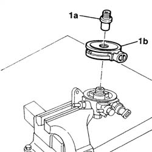

1044D10 FUEL HEATER - R.R.
- Path
- Procedures > 10 ENGINE > 1044 FUEL CIRCUIT PUMP/S AND DEVICES > 1044D FUEL HEATING DEVICE > 1044D10 FUEL HEATER - R.R.
- Kind
- repair procedure (removal / refitting; the operation number is the code)
- Applies to
- engines: 2.4 JTD 10V; all production periods
- Interactive page
- https://sloeber94.github.io/elrnDB-lThss/en/#/100108
Applies to: engines: 2.4 JTD 10V; all production periods
 Removing
Removing
 Refitting
RefittingSee in Op. 7040D50 ENGINE COMPARTMENT UPPER SOUND INSULATION SHIELD - R.R.
See in Op. 1044B10 fuel filter assembly - r + r or replace
See in Op. 1044B20 fuel filter filtering element - replace
1. Undo the centre connector (1a) and remove the fuel heater (1b).

Applies to: engines: 2.4 JTD 10V; all production periods
Refitting
Removing- Fit the fuel heater and tighten the centre connector.
See in Op. 1044B20 fuel filter filtering element - replace
See in Op. 1044B10 fuel filter assembly - r + r or replace
See in Op. 7040D50 ENGINE COMPARTMENT UPPER SOUND INSULATION SHIELD - R.R.